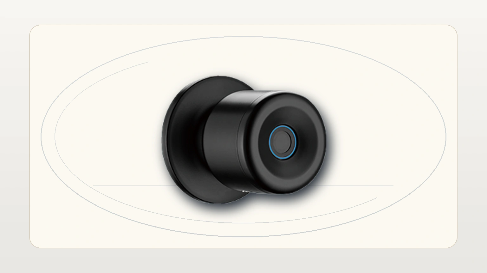
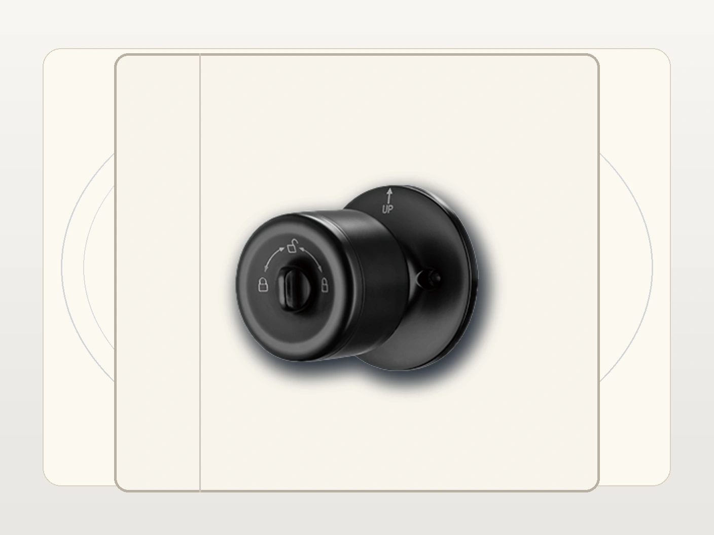
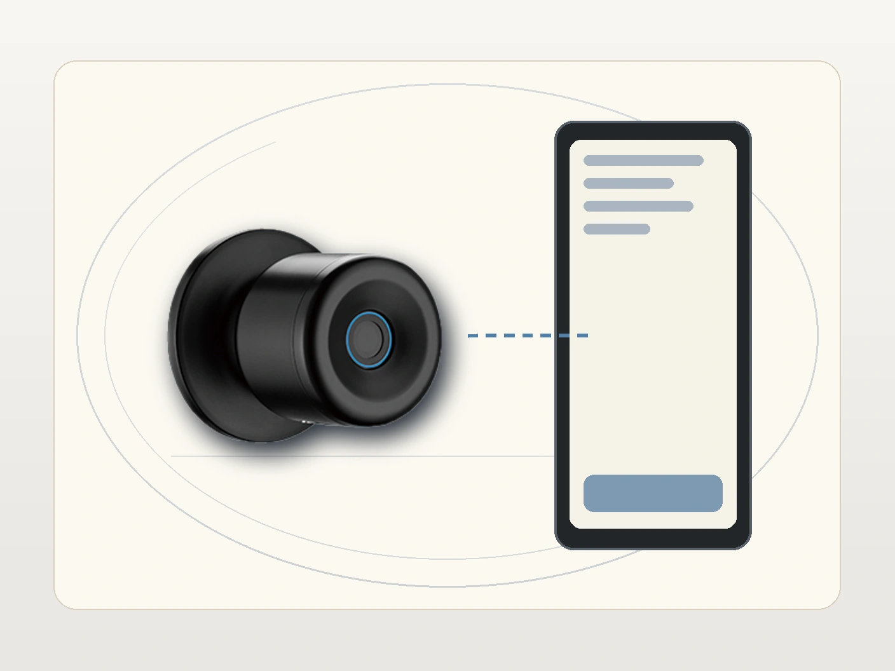
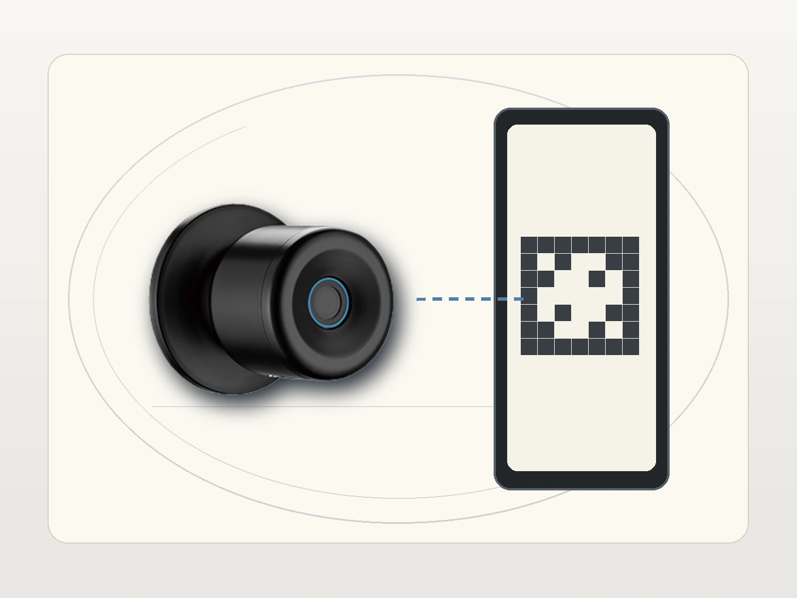
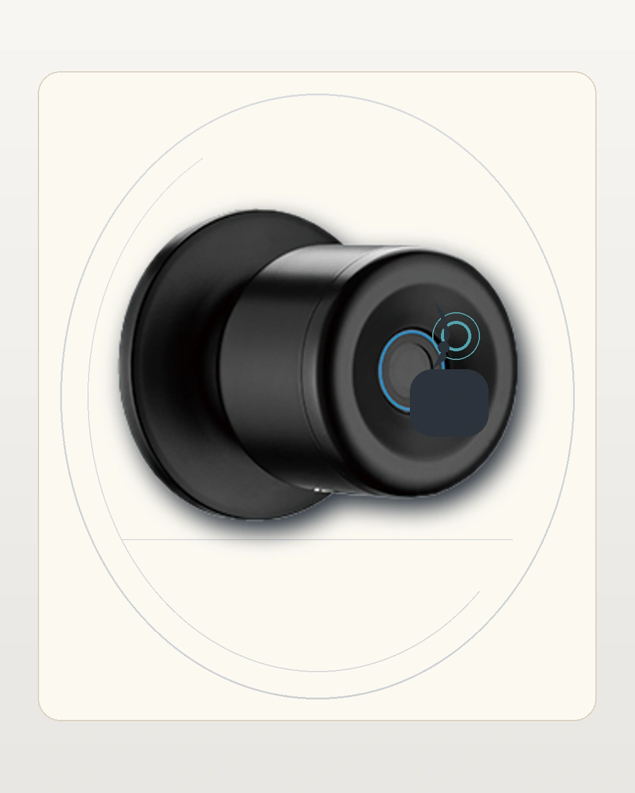
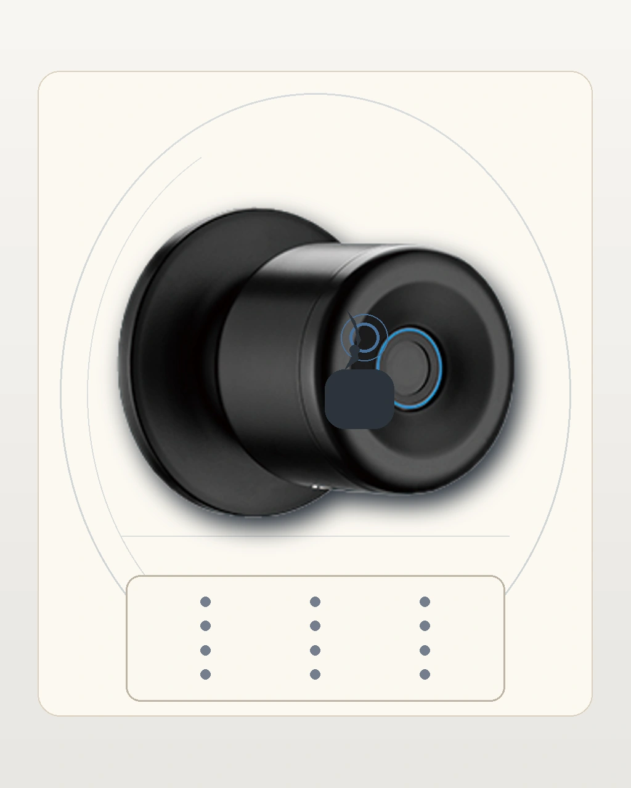
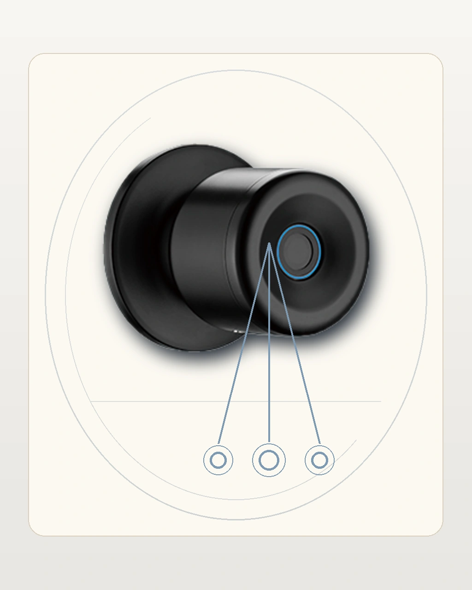
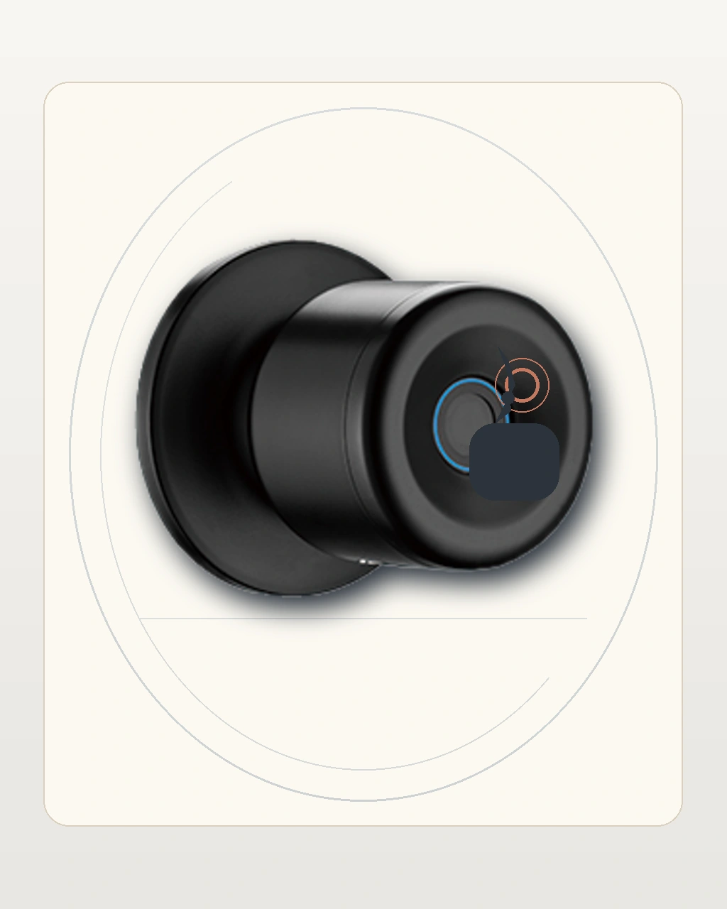
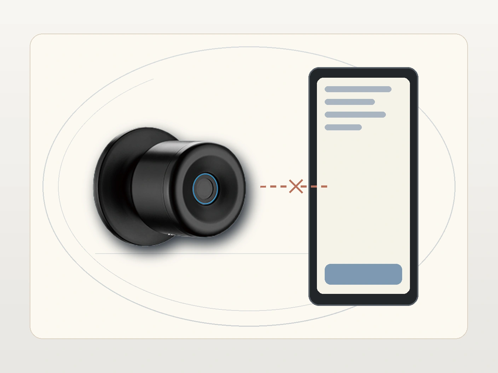
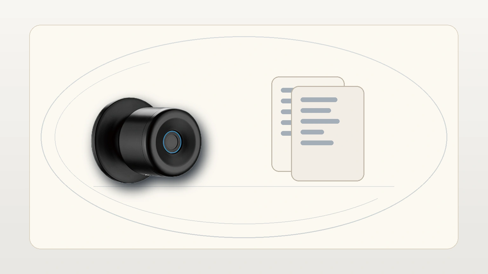

e-Nova
Borrador inicial para revision visual
Este borrador usa exclusivamente assets review-draft del reset visual 2026-05-13 para revisar una version mas completa del manual sin inventar hardware que el producto no tiene.
1. Introduccion
e-Nova se documenta aqui como una cerradura de pomo inteligente con operacion principal por Bluetooth y app, sin inventar un keypad frontal que el producto no tiene.
2. Capacidades clave
- Conectividad: Bluetooth con la app Tuya Smart.
- Modos de apertura: huella dactilar, llave fisica y control desde la aplicacion movil.
- Gestion biometrica: el registro de huellas se realiza desde el celular por Bluetooth.
- Modos de uso: normalmente abierto, normalmente cerrado y doble cierre desde el pomo interior.
- Energia: bateria de litio de 400 mAh con respaldo por USB.
- Compatibilidad: puertas de 35 a 55 mm.
3. Vista general y puesta en marcha


Antes de usarla:
- confirma el sentido de apertura de la puerta
- carga la bateria o verifica que tenga energia suficiente
- instala y abre Tuya Smart en el celular principal
- define el administrador que quedara vinculado al equipo
4. Alta inicial del administrador
Este bloque sirve para revisar si la narrativa visual local del pomo comunica bien el primer alta de acceso, sin sugerir un panel frontal que el producto no tiene.
5. Vincular la cerradura por Bluetooth


Flujo recomendado:
- activa Bluetooth en el celular
- abre la app Tuya Smart
- entra al flujo de agregar dispositivo
- coloca la cerradura en modo de vinculacion segun su version
- usa QR solo si la app real lo muestra en ese flujo
6. Registrar huellas desde la app

Como el producto no depende de un teclado frontal, el registro de huellas debe describirse desde la app y validarse sobre el pomo:
- entra a la gestion del dispositivo en Tuya Smart
- abre el modulo de miembros o huellas
- inicia el alta de una nueva huella
- sigue las indicaciones de apoyo hasta completar el registro
- prueba la apertura sobre el pomo
7. Flujo condicional de contrasena o acceso alterno

Este apoyo visual es condicional. Sirve solo para explicar flujos alternos de acceso cuando la version instalada o la app los justifica. No debe presentarse como si e-Nova tuviera un keypad frontal independiente.
8. Ajustes condicionales e idioma

Si la version instalada expone idioma, ajustes basicos o menus auxiliares, esta imagen sirve como apoyo de revision. No debe presentarse como prueba de una pantalla fija en el frente del equipo.
9. Recuperacion y solucion de problemas


Para la web, deja claros estos puntos:
- reintento de lectura biometrica sobre el pomo
- reconexion Bluetooth cuando la app no detecta el equipo
- recuperacion o alimentacion de emergencia por USB cuando la bateria este baja
10. Descargas y soporte

Este asset puede acompañar descargas, ficha tecnica y ayuda postventa sin forzar claims tecnicos que la imagen no valida por si sola.
11. Estado del borrador
Este archivo es una version integral de revision. Los assets review-draft fueron reconstruidos bajo el reset visual 2026-05-13 y quedan listos para inspeccion antes de publicar el paquete final.